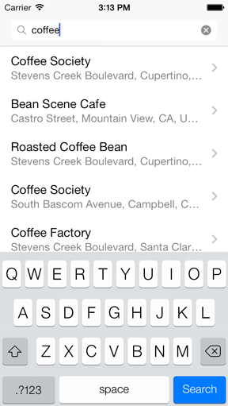
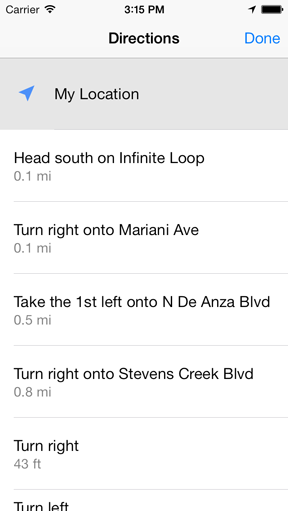

TCGoogleMaps
TCGoogleMaps is a navigation app that is built using Google Maps SDK for iOS, Google Places API and Google Directions API.
Search autocomplete with results sorted based on distance from your current location and relevance.

Selecting a search result will give you the directions from your location to the selected destination.

Tapping on the list icon will bring up turn-by-turn directions.

Selecting a step from the list will zoom in on that specific step on the map.

How to Build and Run
- Build Requirements
- Xcode 5, iOS 6.0 SDK or iOS 7.0 SDK, CocoaPods
- Runtime Requirements
- iOS 6.0 or iOS 7.0
Step 1: Download and Install CocoaPods
Follow the simple installation guide from http://cocoapods.org/.
Step 2: Install Library Dependencies
Run the following commands in Terminal.app:
$ cd <PROJECT_DIRECTORY>
$ pod install
$ open TCGoogleMaps.xcworkspace
Step 3: Generate your API Keys
- Go to Google API Console and generate your API key.
-
In Xcode, open
TCGoogleMaps\App\TCGoogleAPIKeys.mand replace with your own API key:NSString * const kTCGoogleMapsAPIKey = @"YOUR-API-KEY"; NSString * const kTCGooglePlacesAPIKey = @"YOUR-API-KEY";
Open Source Libraries Used
- AFNetworking - https://github.com/AFNetworking/AFNetworking
- MBProgressHUD - https://github.com/jdg/MBProgressHUD
See Also
- Google Maps SDK for iOS - https://developers.google.com/maps/documentation/ios/
- Google Places API - https://developers.google.com/places/
- Google Directions API - https://developers.google.com/maps/documentation/directions/
License
This project's source code is provided for educational purposes only. Image resources are based on the icons used in Google Maps. See the LICENSE file for more info.